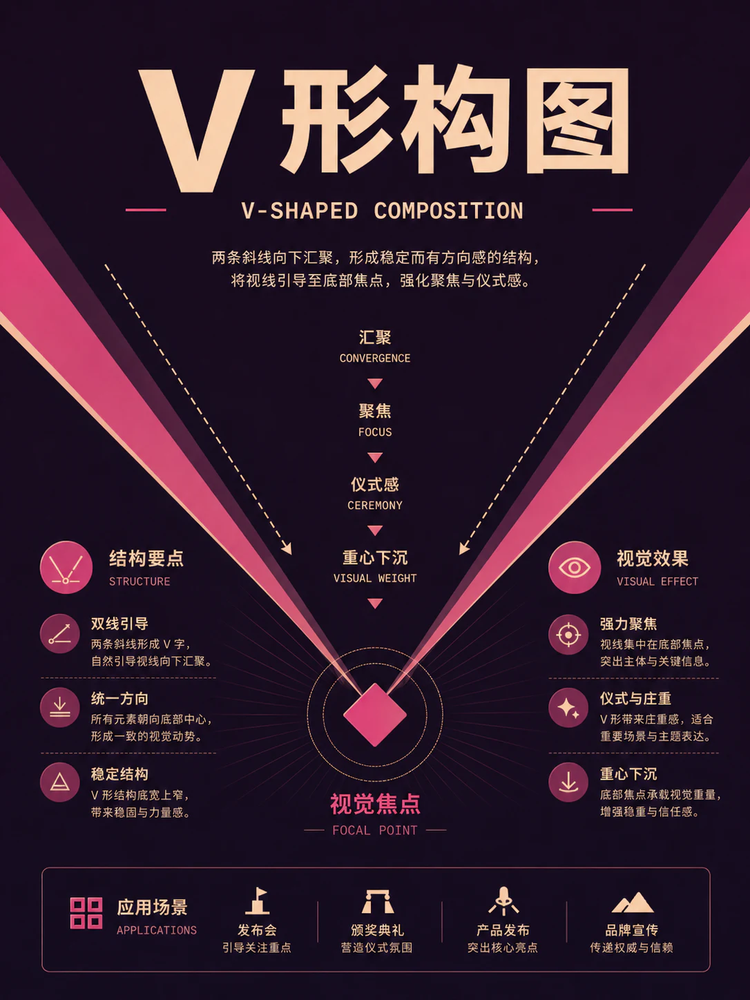

错态 · 浅盘散光 (0/4)
双翼解析交点单真源
夹角摊平到 100°，像一只兜不住视线的浅盘
斜线张得太开，视线滑进来就横穿过去，既沉不下去，也给不了底部焦点足够冲力。
在画布向左横拖（或按 ← 键），把双翼夹角收进 54°–88° 经验参考带。
- V 谷夹角
- 100°
- 左右对称差
- 差 24°
- 底焦承托
- 偏 32%
- 汇流档位
- 散光外滑
V-SHAPED COMPOSITION
两条斜线向下汇聚，形成稳定而有方向感的结构，将视线引导至底部焦点，强化聚焦与仪式感。
画布直操：横拖开合双翼夹角 · 拖圆柄单调左右翼 · 拖底焦对准交点 · 点红框归顺离心块 · 方向键微调
斜线张得太开，视线滑进来就横穿过去，既沉不下去，也给不了底部焦点足够冲力。
在画布向左横拖（或按 ← 键），把双翼夹角收进 54°–88° 经验参考带。
CONVERGENCE & DIRECTED TENSION
原海报把 V 形构图的底层结构拆成三句：「双线引导：两条斜线形成 V 字，自然引导视线向下汇聚」「统一方向：所有元素朝向底部中心，形成一致的视觉动势」「强力聚焦：视线集中在底部焦点，突出主体与关键信息」。
单看水平或垂直线，它们顺着重力和画框边缘躺平，大脑会觉得安稳却缺少去向；一旦线条倾斜，就偏离了参考基准，格式塔心理学称这种拉扯感为定向张力（Rudolf Arnheim, 1954/1974）。只有一条斜线时，眼睛顺坡滑到底很容易刹不住车、直接溜出画框；两条方向相反、彼此镜像的斜线在谷底相会，左右两股推力恰好互抵，形成一只只进不出的光学漏斗。
此外，认知心理学实验（Larson, Aronoff & Stearns, 2007）发现，哪怕剥离一切具象画面，单纯向下的 V 形也能比向上的倒 V 更快捕获注意力并让注视停留更久——这让 V 形天然具备「一秒收拢全场目光」的先发优势。
画面缺少斜向牵引，眼睛会在几个体量相近的色块间来回跳动，底部焦点没有获得优先权。
V SHAPE VS. INVERTED V
原海报原话 · 说反了一点「稳定结构：V 形结构底宽上窄，带来稳固与力量感。」
把这句话放回几何图形上细看，其实刚好说反了：真正「底宽上窄」的是倒 V / 正三角形（∧），像金字塔一样靠宽阔底边抗重力；而正 V（∨）恰恰是「上宽下窄」——所有开阔的斜翼和主标题都在上方，下方收束成一个尖点。
那为什么我们依然觉得优秀的 V 形海报庄重又稳当？秘密不在「底宽」，而在两件事同时成立：一是左右斜翼对称夹持，消除了侧翻倾向；二是原海报右翼提到的「重心下沉：底部焦点承载视觉重量」——用一枚体量充实、对比鲜明的主角稳稳压在谷底，像给倒立的陀螺焊上厚重底座。既有上宽下尖的戏剧张力，又有被稳稳托住的笃定，这正是仪式感诞生的原因。
试着给正 V 加上「实焦底座」，或一键翻成倒 V，对比两者的稳固来源。
ANGLE & ATMOSPHERE
同样的两道斜线，只要张开的角度挪动几十度，传递出的气质就会从尖锐警报切换成盛典庄重，再到开阔松弛。神经影像研究（Larson et al., 2009）表明，越锋利生硬的下指 V 形越容易唤起杏仁核等警觉回路；做商业发布或仪式视觉时，把夹角控制在 54°–88° 经验参考带，才会在抓人眼球的同时保持从容气度。
54°–76° 是发布会与颁奖礼最常用的庄重甜区：双斜线有清晰俯冲势能，中央 V 谷既能安放层级文字，底部交点也稳稳落在黄金下沉区。
INVISIBLE V IN REAL LAYOUTS
原海报在底栏列出了四个最经典的应用场景：发布会（引导关注重点）、颁奖典礼（营造仪式氛围）、产品发布（突出核心亮点）、品牌宣传（传递权威与信赖）。
新手照着教学海报落地时，最容易犯的错是在画面上硬生生画两条大色带。真正成熟的设计往往让 V 形「隐身」：舞台两侧的斜打光束、拉开的剧场帷幕、逐行收短的倒梯形文字块、或是建筑对称檐口的透视线，都能在没有任何明显辅助线的情况下，把观众视线无声地收拢到底部焦点。
切换下方四套实景微海报，再按下透视开关，看看真实版面如何藏起 V 形骨架。
ORIGINS, SIBLINGS & LIMITS
在早期系统构图教材中，Poore 把辐射与汇聚斜线归为核心构图母式之一，指出斜线汇聚能把观者视线强力压向画面的主焦点（Principality）。
从格式塔动力学剖析斜线脱离水平与垂直基准后产生的「定向张力」，并阐明楔形收束与底部视觉重量如何共同维系画面的心理平衡。
通过行为视觉搜索与 fMRI 脑成像证明，哪怕脱离具象语义，向下的 V 形也比向上的倒 V 更快捕获并维持注意力，同时更易触发杏仁核等警觉回路。
电商货架、新闻列表、团队合照需要每个位置机会均等；V 形会把全场目光吸干给最底那一项。
尖锐下指 V 自带警觉与庄重压迫感，容易把轻松松弛的话题做得像严肃发布会。
短视频流底栏、App 悬浮购买条常常盖住下方 15%–20%，把唯一主角压到底端反而最容易被挡死。
两条强斜线会把眼睛拼命拉向底部的条款声明，等于替次要文字抢了主标题的戏。
VISUAL JUDGMENT PRACTICE
ORIGINAL POSTER & KEYWORDS
